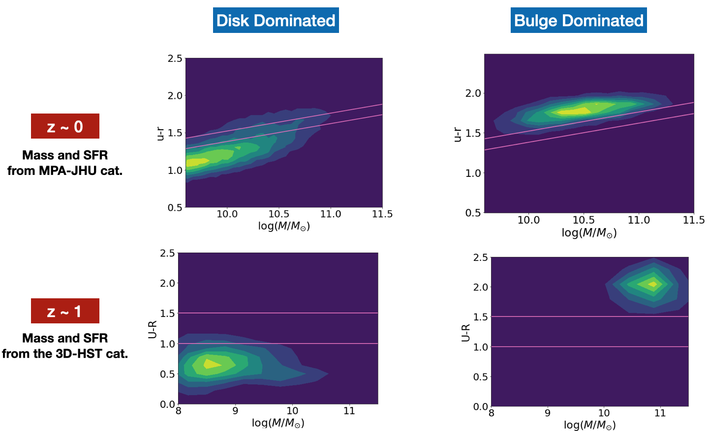
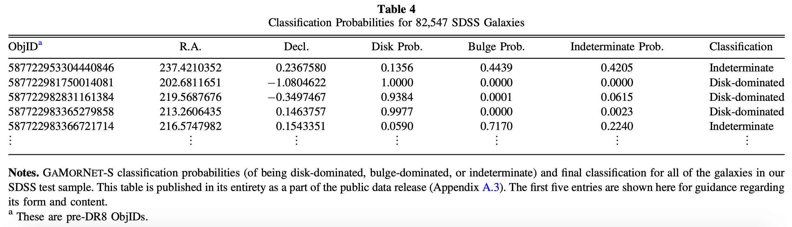
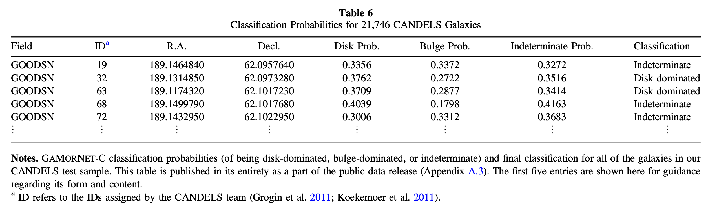

GaMorNet

Galaxy Morphology Network
A CNN for studying galaxy morphology that is trainable with only a dab of real data
Short Summary of What we did
To classify galaxies morphologically, we developed Galaxy Morphology Network,a convolutional neural network that classifies galaxies according to their bulge-to-total ratio. GaMorNet does not need a large training set of real data and can be applied to datasets with a range of signal-to-noise ratios and spatial resolutions. We first trained GaMorNet on simulations of galaxies with a bulge and a disk component and then used a technique called transfer learning to refine the already trained network using $\sim25\%$ of the real dataset to achieve net misclassification rates of $\lesssim5\%$. This has very important consequences, as the applicability of CNNs to future data-intensive surveys like LSST, WFIRST, and Euclid will depend on their ability to perform on multiple data-sets without the need for a large training set of real data.
Using the GaMorNet classifications, we study the quenching of star formation in $\sim 100,000$ ($z\sim0$) SDSS and $\sim 20,000$ ($z\sim1$) CANDELS galaxies. We find that bulge- and disk-dominated galaxies have completely different color-mass diagrams, in agreement with previous studies. For both SDSS and CANDELS galaxies, disk-dominated galaxies peak in the blue cloud, across a broad range of masses, consistent with slow exhaustion of star-forming gas with no rapid quenching. A small population of red disks is found at high mass ($\sim14\%$ of disks at $z\sim0$ and $2\%$ of disks at $z \sim 1$). In contrast, bulge-dominated galaxies are mostly red, with much smaller numbers down towards the blue cloud, suggesting rapid quenching and fast evolution across the green valley.
The Network
The image at the top of this page shows a schematic representation of GaMorNet. The architecture of GaMorNet is based on AlexNet, a CNN which won the 2012 ImageNet Large Scale Visual Recognition Challenge(ILVRS). Very broadly speaking, the architecture of GaMorNet consists of 5 convolutional layers and 3 fully connected layers. Interspersed between these are local response normalization, max-pooling and dropout layers. Refer to Sec.3.2 in the paper to learn more about the architecture of GaMorNet
We implement GaMorNet using Keras and TFLearn , both of which are high-level APIs of TensorFlow. The Source Code of GaMorNet is made available as a public GitHub repository linked below.
Training The Network
We first train GaMorNet on simulations of galaxies, each with a bulge and disk component. We simulate these galaxies using Galfit. Since we simulated hundreds of thousands of galaxies for our work and since the simulations are independent of each other, we could easily simulate the galaxies in parallel and the code we used to simulate the galaxies is available as the GalaxySim GitHub repository.
Then we take the network trained on simulations and refine the layers towards the end of the network using a technique called transfer learning using $\sim 25\%$ of the real dataset. Upon testing the network on the remainder of the real data and comparing our results to previous classifications, we find that GaMorNet achieves a net misclassification rate of $\lesssim 5\%$. We make our trained models available for the public. For more information about how to use these models, please refer to the Data Release Handbook and the Tutorials in the documentation. Tables 5 and 7 from the paper, summarizing the performance of GaMorNet, are shown below.
Prediction Tables
We take the final trained network and apply it on 82,547 SDSS g-band galaxies at $z\sim0$ and 21,746 CANDELS H-band galaxies at $z\sim1$. For each galaxy, the network produces a probability for it to be bulge-dominated, disk-dominated or neither. The list of all the galaxies along with these probabilities and their final assigned classifications are made public through the link below. For more details on what we define to be 'bulge-dominated','disk-dominated' and what probability thresholds you should use to classify the galaxies, please refer to Sec. 4.1 of the paper. Tables 4 and 6 from the paper, showing the format of the prediction tables, are reproduced below.
 Simulations of Galaxies
We trained GaMorNet on hundreds of thousands of simulated galaxies. For simulating these galaxies, we used the below mentioned GitHub repository, which uses GALFIT to simulate galaxies in parallel. This simple repository can be used in any situation where someone needs to simulate a large number of galaxy surface brightness profiles.